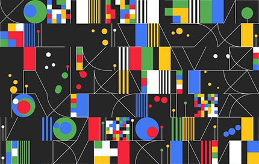
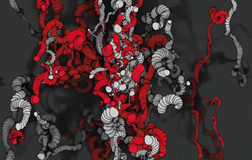

KunstGenerator
In deze cursus leer je een computerprogramma te schrijven dat kunst genereert. Je maakt kennis met p5.js, een JavaScript module voor creative coding. Hiermee kun je een aantal voorwaarden opstellen in een algoritme waarna het programma, op basis van willekeur, zelf keuzes maakt in het voltooien van het kunstwerk.


Kjetil Golid, Studio Apartments, 2019

Okazz, 201025a, 2020

Wat is generatieve kunst?
Generatieve kunst is een vorm van kunst die in het geheel of deels is gecreëerd met behulp van een autonoom systeem. Het kunstwerk wordt een samenwerking tussen de kunstenaar en de computer, waarbij de maker slechts een aantal aspecten van het kunstwerk bepaalt. Vaak spelen elementen van willekeur een rol, waardoor het gegenereerde resultaat van verschijningsvorm kan veranderen. In zekere zin geeft de kunstenaar gedeeltelijk de controle over diens kunst uit handen aan het programma. De maker stelt een verzameling regels en instructies op in een algoritme, en vervolgens wordt het werk gegenereerd door het uitvoeren van de code.
Generatieve kunst bestaat al sinds de jaren 60 van de twintigste eeuw, toen kunstenaars de mogelijkheden gingen verkennen om met behulp van computers afbeeldingen te maken. Voor die tijd waren het vooral wetenschappers die de benodigde technische kennis hadden om computers te bedienen. Het waren dan ook wetenschappers die de eerste tentoonstellingen met computergegenereerde afbeeldingen organiseerden. Met de komst van de PC en meer toegankelijke programmeertalen vanaf de jaren 80 werd het kunstenaars en ontwerpers mogelijk gemaakt om hun werk te maken met behulp van computers.
Vandaag de dag is generatieve kunst wijdverbreid en volledig geaccepteerd als volwaardige kunstvorm. Het wordt wereldwijd geëxposeerd in musea voor moderne kunst en verhandeld op kunstbeurzen, in galeries en online. In Amsterdam is het NXT Museum volledig gewijd aan generatieve en interactieve mediakunst. En met de stormachtige opkomst van NFTs - eigendomsbewijzen van digitaal werk opgeslagen in blockchain technologie - is voor het eerst een verdienmodel ontstaan voor makers van digitale kunst.
Wat is een algoritme?
Een algoritme is niet meer dan: een aantal stappen dat je zet om een bepaald doel te bereiken. Een algoritme heeft dus niet per se te maken met grote bergen data en technologie. Een rekensom is een algoritme, maar een doe-het-zelf bouwpakket is dat ook. In de instructiehandleiding staat precies beschreven hoe en in welke volgorde je bepaalde handelingen moet uitvoeren om uiteindelijk tot het eindresultaat, bijvoorbeeld een kast, te komen. Hierbij is het belangrijk om alles in de juiste volgorde uit te voeren, anders gaat je kast nergens op lijken.
Een algoritme is dus in feite een stappenplan. In de informatica worden algoritmes vaak gebruikt om logistieke problemen op te lossen of om processen te optimaliseren. Bijvoorbeeld om een schoolrooster of dienstregeling te maken, of een zelflerend algoritme voor spraakherkenning. In deze cursus gaan we algoritmes op een andere manier gebruiken, niet om problemen op te lossen maar om een digitaal kunstwerk te genereren. Je gaat leren om een set regels en instructies op te stellen in een algoritme dat visueel werk genereert, met een belangrijke rol voor toeval waardoor je kunstwerk er telkens anders uit kan zien.
Wat is p5.js?
p5.js is een JavaScript library (een library is min of meer een verzameling van functies, opdrachten voor de computer) en daarmee geeft het je een aantal gereedschappen om het makkelijker te maken om de JavaScript programmeertaal te gebruiken om creatief te coderen. p5.js is ontworpen voor programmeurs en ontwerpers die interactieve, visuele programma's willen maken die rechtstreeks op een webpagina worden uitgevoerd. Het is ontworpen voor creatief coderen en bevindt zich op het snijvlak van coderen en kunst. Het is gebaseerd op Processing, een creatieve programmeer omgeving die oorspronkelijk ontwikkeld is door Ben Fry and Casey Reas. Een van de belangrijkste doelen van Processing (en projecten gebaseerd op Processing) is om het makkelijker te maken voor beginners om programmeren te leren voor specifiek interactieve en grafische programma's (terwijl het ook zeer krachtige en mooie tools geeft voor experts).
Een ander belangrijk idee achter Processing is dat het heel makkelijk zou moeten zijn voor programmeurs om software prototypes snel te kunnen maken, om nieuwe ideeën uit te proberen om te zien of het werkt. Om deze reden hebben de bedenkers de Processing (en p5.js) programma's 'sketches' (schetsen) genoemd. Een benaming die we hier zullen aanhouden. Want net zoals je niet hoeft te weten hoe het eindresultaat eruit zal zien als je begint te tekenen, hoef je ook niet te weten hoe het eindresultaat eruit zal zien als je begint met coderen.
Je werkt deze cursus in de p5 webeditor, een online programmeeromgeving waarin je je code schrijft en ook je werk kunt opslaan (al is het natuurlijk handig om je werk ook lokaal op te slaan, de cloud kan ook kapot). Je kunt in de p5 editor direct aan de slag gaan, je hoeft niets te downloaden of te installeren. Bovendien zijn er talloze voorbeelden beschikbaar en kun je heel makkelijk je werk delen met anderen.
Wat weet ik al over programmeren?
Deze cursus gaat ervan uit dat je al het één en ander weet over programmeren, je hebt hiervoor al een beginnerscursus programmeren in Python of JavaScript afgerond. Je hebt dus al gewerkt met datatypes als int, float, boolean en string, en je weet wat expressies en operatoren zijn en hoe je ze kunt gebruiken in je code om bijvoorbeeld een wiskundige berekening uit te voeren en het resultaat op te slaan in een variabele. Je weet ook hoe je variabelen kunt gebruiken om je code efficienter te maken en makkelijker aan te passen. Ook kun je een if/else statement gebruiken om een keuzestructuur in te bouwen in je programma.